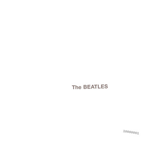

Welcome to my first 2 album reviews! I will be basing all scores out of 5 points per category. The categories are listed below!
// all information was found on the wiki for the dark side of the moon album by pink floyd This album was Pink Floyd's eighth and was written from 1972-1973. One of the main focuses of the album was around the life style of the band, as well as mental health. There were 2 singles released to promote the album; "Money" and "Us and Them". This is one of the most influential albums in music history, with many artists even today, drawing inspiration from the unique songs. Dark Side of the Moon has sold over 45 million copies, recieved best-selling album of the 70s, fourth best-selling album in history, and went 14 times platinum. Along with many other achievements, this album was also inducted into the Grammy Hall of Fame (1999).

| Category | Score |
|---|---|
| Tone | 5 |
| Instrumentals | 5 |
| Lyrics | 5 |
| Total | 15/15 |
// all information was found on the wiki for the white album by the beatles This album was The Beatles ninth album, written and released in 1968. The self titled album is often referred to as The White Album because the cover is entirely white aside from the name. This was done to seperate itself from previous album covers like Sgt. Pepper's Loney Hearts Club Band which were often full of detail and color. It is one of the most famous albums in rock and music history and is often known as one of the greatest albums in history. While one of their most famous, this album was full of drastically different song tones, since John Lennon wanted to write about falling in love with his new wife Yoko Ono, and Paul wanted to focus on real world issues, like the rising political conflicts. Ringo Starr even quit the band for a few weeks durring the creation of this album. Some of the tension could be due to this being the bands first album since the death of their manager, Brian Epstein. Some of the most notable songs are, "While my Guitar Gently Weeps", "Blackbird", and "Glass Onion"
| Category | Score |
|---|---|
| Tone | 4 |
| Instrumentals | 5 |
| Lyrics | 5 |
| Total | 14/15 |